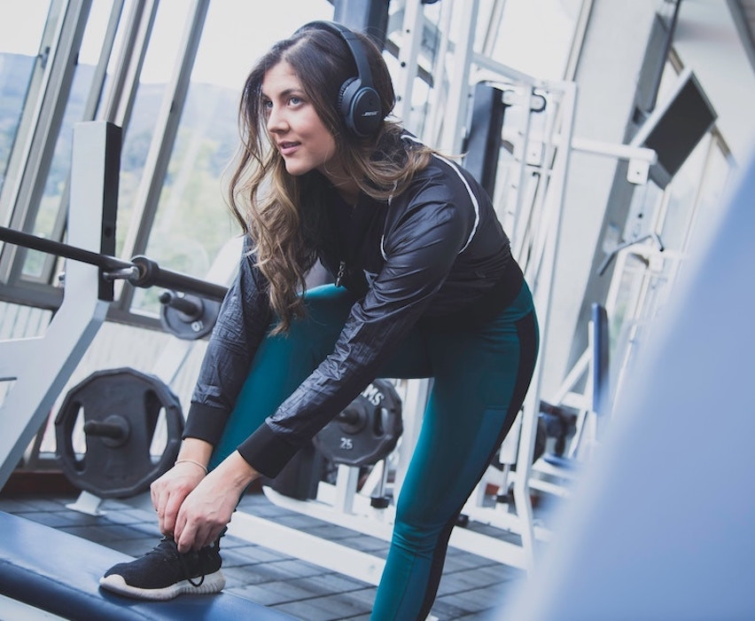

Inspiring Workouts
Course: User Experience Design and Evaluation.
Challenge
The project addressed a common workout problem: users lose motivation and inspiration over time, especially when guidance feels generic or disconnected from their personal training rhythm.
Cost Barrier: Personal trainers are expensive and not always accessible.
Lack of Personalization: Existing workout guidance often feels one-size-fits-all.
Focus Drop: Users struggle to stay concentrated during training sessions.
My Role
I worked with user research, concept development, and prototyping. I helped translate qualitative insights into interaction flows and designed a digital concept that supports motivation in real time during workouts.
Process
Interview: We ran an open-ended one-hour interview to understand what inspiration means to the user and how motivation is currently experienced during exercise.
Design Probes: We used three design-probe activities to gather richer personal and behavioral insights in a co-creative format.
Re-Interview: We reviewed probe outcomes with the user to validate interpretations and identify priorities for the concept direction.
Prototype: We moved from paper sketches to a digital prototype and defined three core flows: selecting workout type, selecting workout length, and navigating the active workout session.
Delivery & Impact
Motivation-Focused Concept: The final concept introduced a guidance experience designed to improve motivation and inspiration throughout a workout.
Adaptive Guidance: The concept was designed to connect to pulse data and adapt the experience to user intensity in real time.
Core Experience Set: The prototype included workout category selection, flexible workout duration, and clear in-session navigation.
Content Breadth: The final direction covered five workout types: aerobics, cycling, weight lifting, running, and walking.
Persona-Based Coaching: Coaching personas were matched to workout types to create a more engaging and relatable training experience.